花庭の枝先と席の縁 / 実画面 c6
美術 HOLD / 独立理解・安全 N=0 / 全島 M1 制作中
採用原本と同じ実3D部品を使った本体rendererのDEV診断です。保存済みの合成32所有物・8軒を再利用しています。新取得、本人保存、32軒拡張、offline更新、性能、公開の合格ではありません。
Visual candidate: native05-authored-flower-garden-v3
Build: authored-flower-edge-c6
Actual target: http://127.0.0.1:5353/prototypes/place-qa/authored.html?water=wide&reference=preflight32
VITE_ISLAND_ENABLED=true / normal build native=false / actual authored DEV root nativeGrowingArt=true。新規browser context。PWA更新は未検査。
制作記録 / 6軸の実画面評価 / 検証と未達 / 生のruntime report / sourceと画像の照合
採用原本と最新の全景
左は完成目標の原本レンダー、右は今回の本体画面です。所有数・画角・照明が異なるため、pixel一致の証拠ではありません。造形、植物の面、内側の空間、家の見え方を比較します。
 採用原本 / 完成目標
採用原本 / 完成目標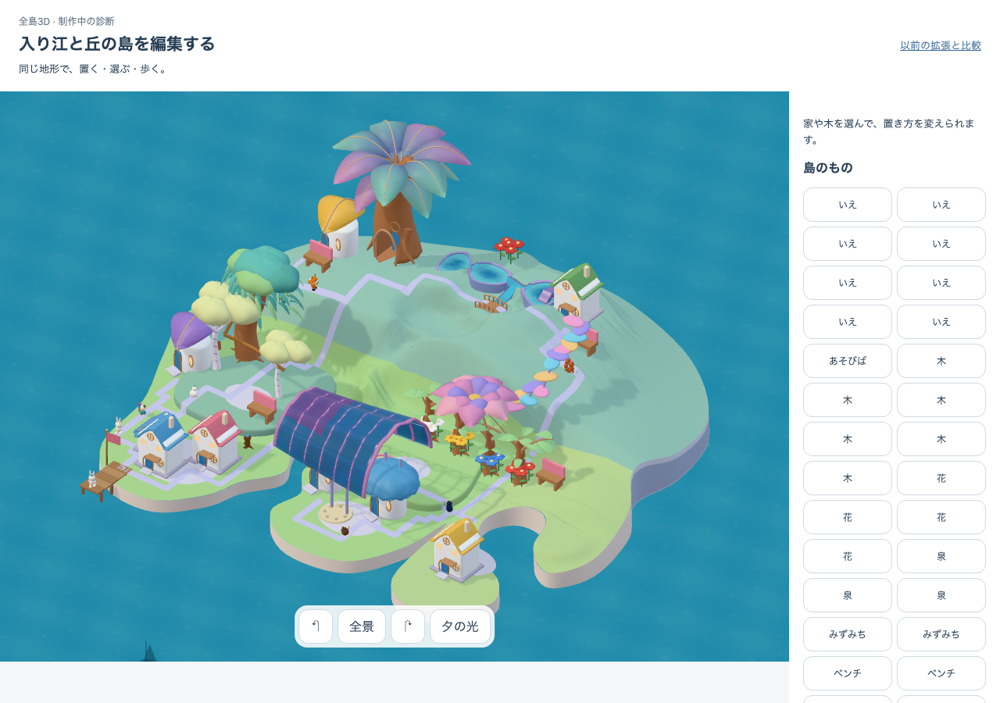
c6 実全景 / 1280 x 900 / HOLD同じ入力の近景比較
左は前候補c4（v1）、右は現候補c6（v3）。比較用の履歴であり、現候補の旅程へ旧画面を混在させたものではありません。
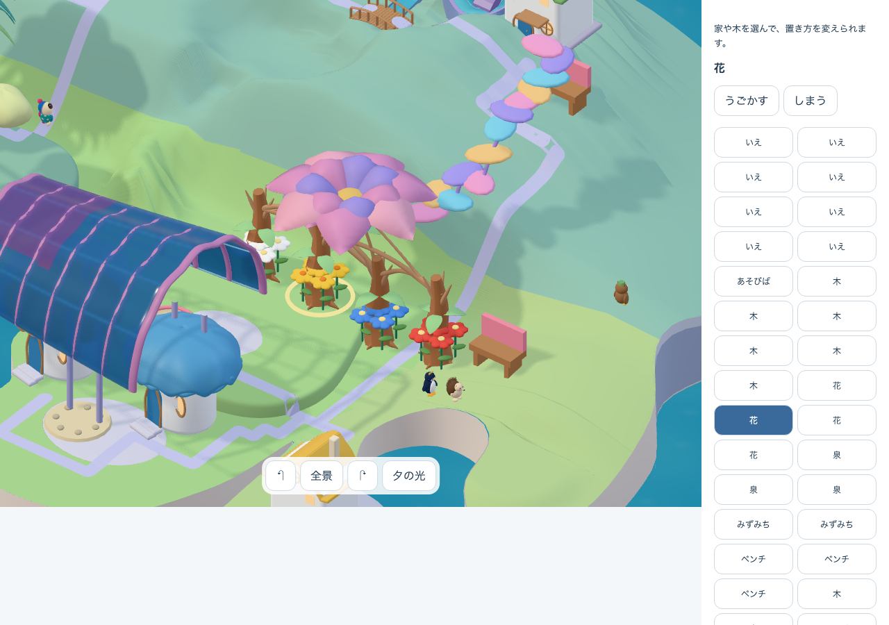
前候補 c4 / v1 / 1280 x 900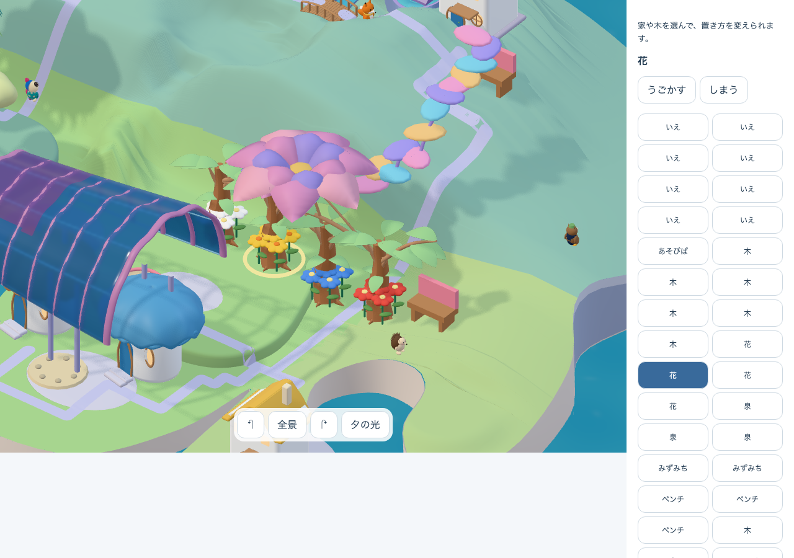
現候補 c6 / v3 / 1280 x 900同じ候補の12実画面
成熟の全景・近景、分離・再接続、回転、768/390幅、若い全景・近景。全4株の実canvas選択、予告取消・分離・収納・再接続はreportに記録しています。このDEV旅程は、起動から学習・本人保存へ至る製品全経路の代わりにはしません。
desktop-mature-whole-day.png
1280 x 900desktop-flower-close-day.png
1280 x 900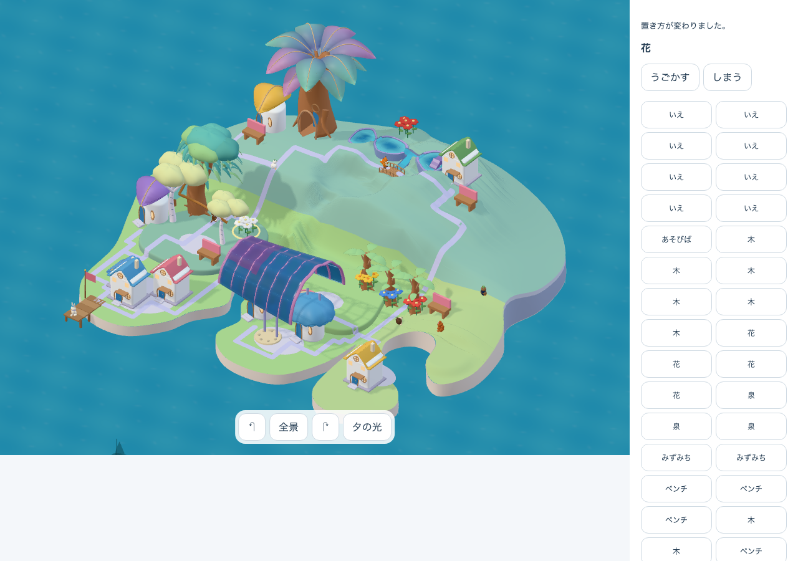
desktop-flower-split-whole-day.png
1280 x 900desktop-flower-reconnected-whole-day.png
1280 x 900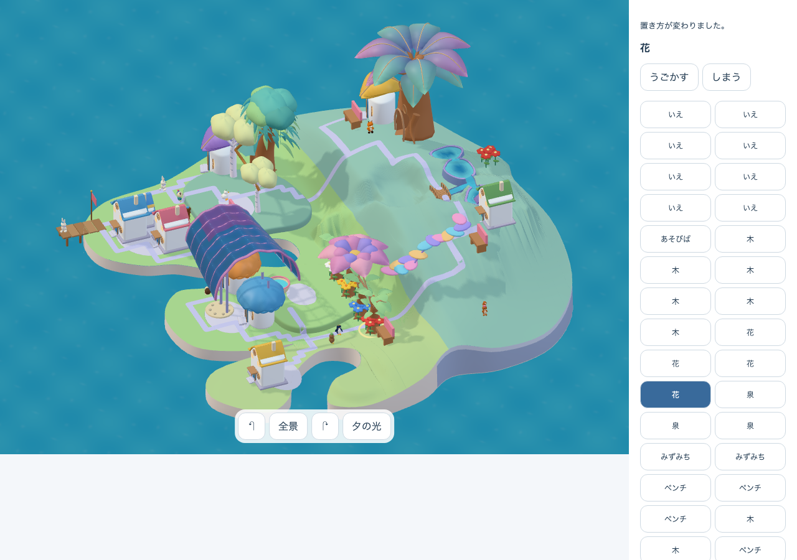
desktop-rotated-whole-day.png
1280 x 900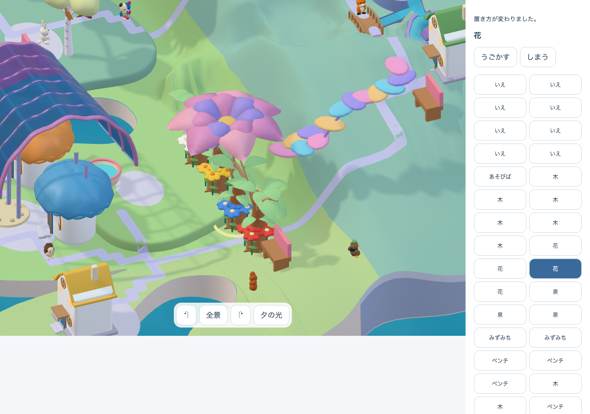
desktop-rotated-flower-close-day.png
1280 x 900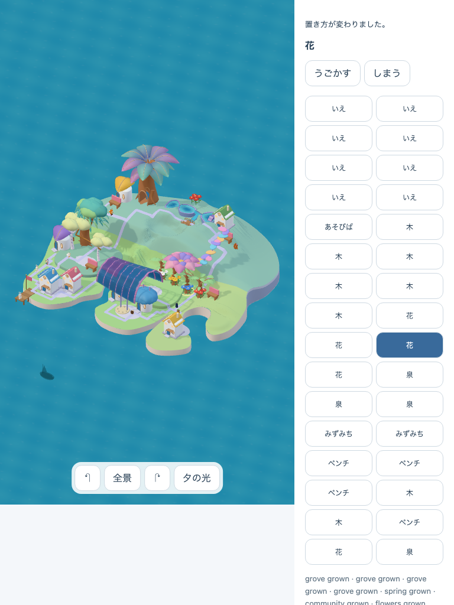
768-mature-whole-day.png
768 x 1024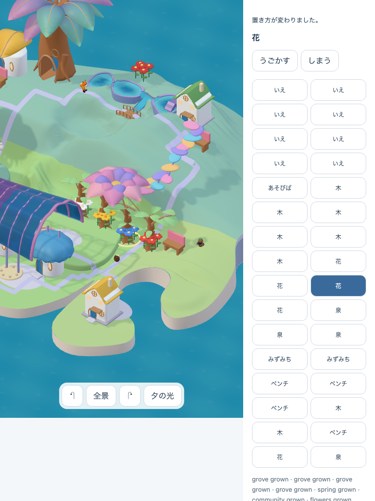
768-flower-close-day.png
768 x 1024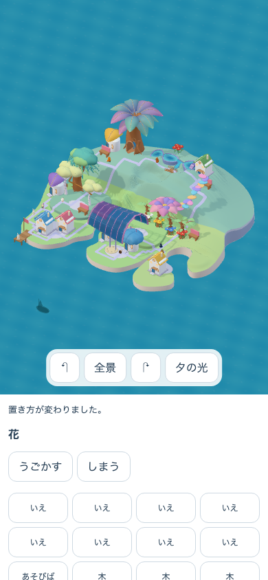
390-mature-whole-day.png
390 x 844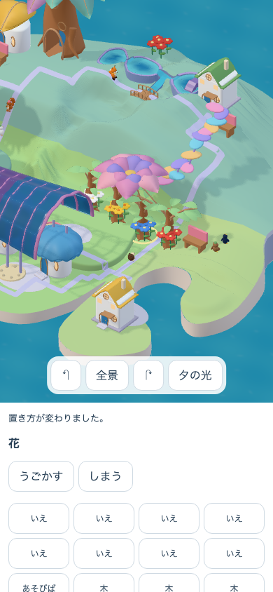
390-flower-close-day.png
390 x 844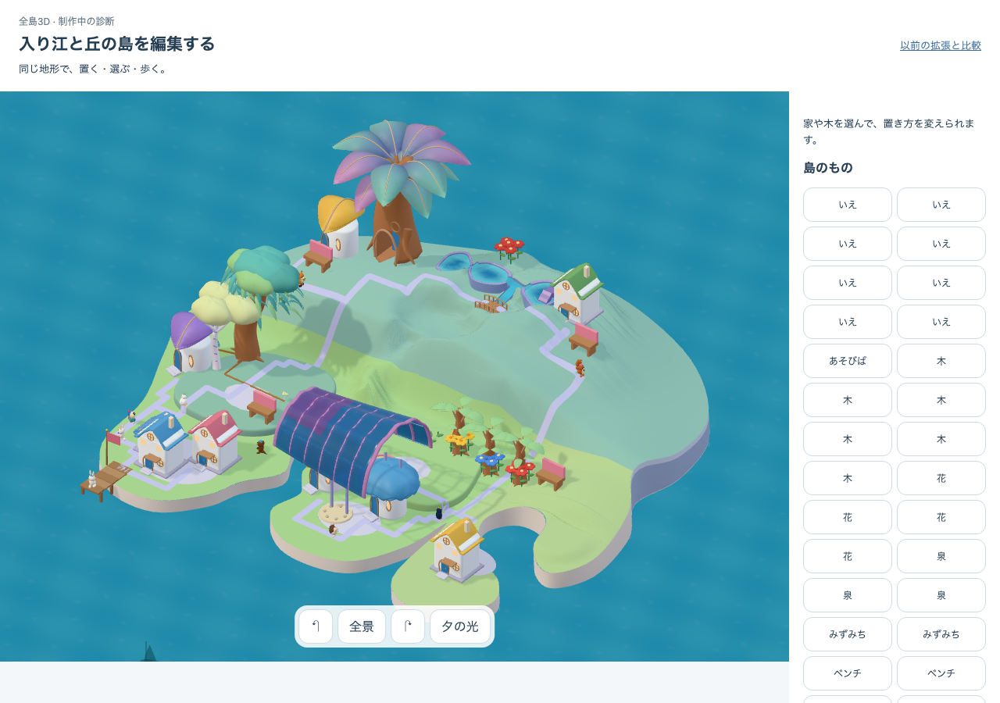
desktop-young-whole-day.png
1280 x 900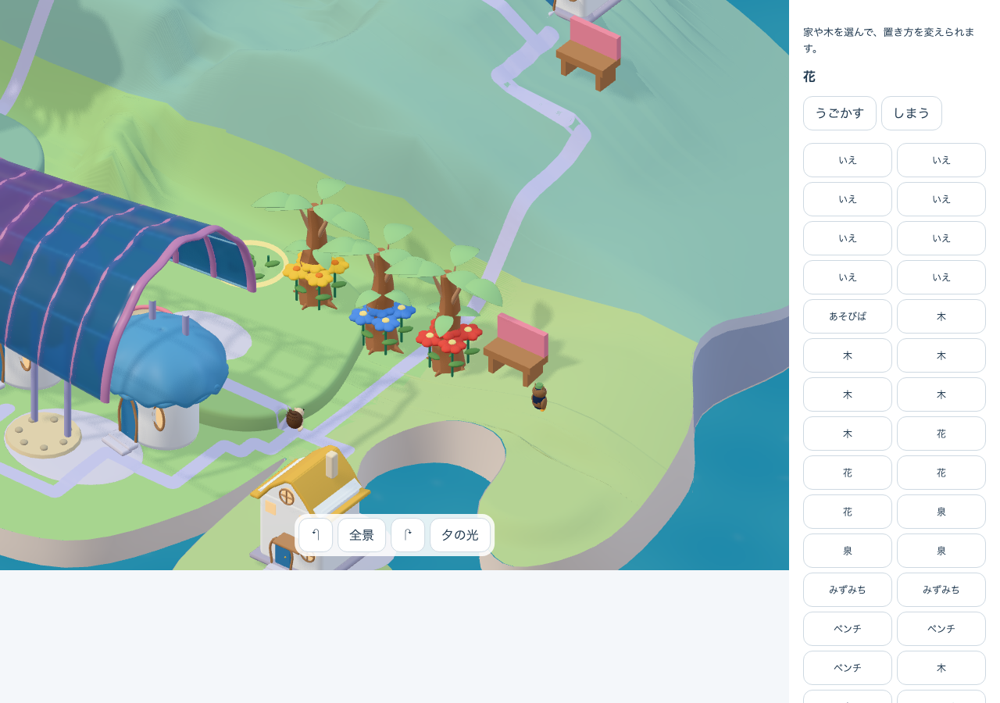
desktop-young-flower-close-day.png
1280 x 900